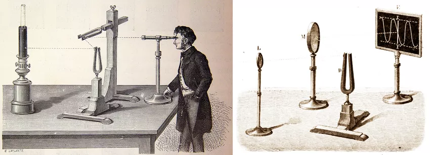
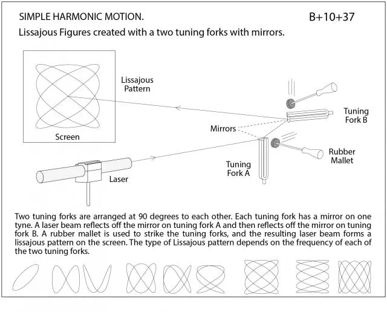
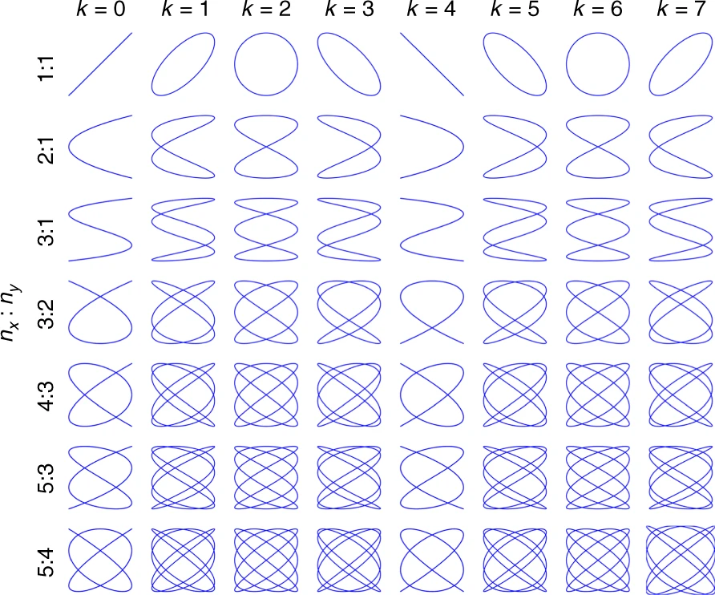

Obviously, it all begins with two physicists
The curves we call "Lissajous" actually have an earlier origin. In 1815, American mathematician Nathaniel Bowditch first described these patterns while studying pendulum motion.
But it was French physicist Jules Antoine Lissajous who, in the 1850s, turned them into spectacle. His experiment was simple: mirrors attached to vibrating tuning forks, projecting beams of light onto screens in darkened lecture halls. Audiences could watch sound become "visible". The curves took his name and have remained scientifically useful ever since.


The Mathematics
A Lissajous curve appears when two perpendicular oscillations combine. Here is the math for those two oscillations:
Where:
- and control amplitude (the size in each direction)
- and are the frequencies of oscillation (in Hz)
- and are the phase offsets
- is time
Frequency Ratios and Periodicity
If both frequencies share a greatest common divisor , we can write:
where and are coprime integers. This ratio determines everything about the curve's structure. The value becomes the frame rate; the frequency at which the entire pattern repeats. Another way of seeing it: every seconds, the trajectory traces exactly the same path.
| Ratio | Result |
|---|---|
| Ellipse (or circle, or line depending on phase) | |
| Figure-eight shape | |
| More complex closed loop | |
| Never closes: fills the rectangle forever |
Simple ratios produce closed curves. Irrational ratios create paths that wander eternally without repeating.
The Phase Parameter
The combined effect of both phase offsets can be combined in a single parameter , defined as:
This parameter has a period of 8, meaning and produce identical figures. When is an integer, eight distinct basic figures exist for any given frequency ratio.
Assuming and setting , the equations simplify to:
The figure below shows how affects the trajectory for various frequency ratios. Notice that when or , the figures achieve maximum symmetry: symmetric about both axes and the origin simultaneously.

Symmetry Properties
The symmetry of a Lissajous figure depends on the parity of and :
- When is even → symmetric about the -axis
- When is even → symmetric about the -axis
- When both are odd → symmetric about the origin
Two Lissajous patterns with parameters and are identical if and only if:
where is any integer.
Fill Factor: Measuring Trajectory Density
A critical property for applications is the fill factor (FF). It's a measure of how densely the curve covers its bounding rectangle. Lissajous trajectories are characteristically dense at the edges and sparse near the center. The maximum gap appears in an approximate parallelogram containing the origin.
For scanning applications like LIDAR (e.g. self driving cars), minimizing this gap (or maximizing density) is super important. Research has shown that produces optimal density for most frequency ratios, establishing a key design rule for Lissajous-based systems.
Seeing Sound: The Music Connection
Here's where Lissajous curves become magical: those frequency ratios are musical intervals.
| Ratio | Musical Interval |
|---|---|
| Octave | |
| Perfect fifth | |
| Perfect fourth | |
| Major third |
When two notes form a consonant harmony, their Lissajous figure is clean, closed, symmetrical. Dissonance produces chaos: curves that refuse to close.
You can literally see whether two notes sound good together.
Making Your Own
The Victorian Way: Harmonographs
Before computers, there were harmonographs: pendulum-driven drawing machines popular in the 1800s. Two or more pendulums swing in perpendicular directions, and a pen traces their combined motion onto paper.
Simpler Experiments
- Sand pendulums: A funnel of sand swinging over paper
- Laser on speakers: Mount a mirror on one speaker cone, bounce a laser off it onto a wall, play two frequencies through stereo speakers (similar to how Lissajous did it)
- Oscilloscope: Feed two audio signals into and inputs (easy to do and actually useful)
The Modern Way: Code
A few lines in Python will generate infinite variations:
import numpy as np
import matplotlib.pyplot as plt
t = np.linspace(0, 1, 10000)
nx, ny = 5, 4
k = 2
f0 = 1
x = np.cos(2 * np.pi * nx * f0 * t)
y = np.cos(2 * np.pi * ny * f0 * t + k * np.pi / (4 * nx))
plt.plot(x, y)
plt.axis('equal')
plt.show()
Play with nx, ny, and k. Watch the curves change.
Applications
Science and Engineering
Oscilloscopes have used Lissajous figures since the early 20th century to compare signal frequencies. An unknown frequency fed into one axis, a known reference into the other. The resulting shape instantly reveals their ratio and thus the unknown frequency.
MEMS LIDAR and Laser Scanning
Modern microelectromechanical systems (MEMS) scanning mirrors exploit Lissajous trajectories for solid-state LIDAR systems. By driving a two-axis mirror with sinusoidal waveforms at carefully chosen frequencies, engineers create scanning patterns that cover a field of view with predictable density and timing.
That enables various applications from autonomous vehicle sensing to 3D imaging microscopy.
Art and Design
Perhaps the most famous Lissajous figure hidden in plain sight: the ABC television logo, a stylized ratio curve that has represented the network since 1965.
More recently, Meta's 2021 rebrand introduced a logo that is essentially an infinite loop: a Lissajous-like figure rotated, representing connection and infinity.
Beyond Two Dimensions
Lissajous Knots
Add a third oscillation:
Now the curve spirals through 3D space. Depending on the frequency ratios, it can form true mathematical knots: curves that loop through themselves in ways that cannot be untangled without cutting.
These Lissajous knots have become a subject of serious topological study.
Related Patterns
- Spirograph toys produce related curves called hypotrochoids and epitrochoids
- Certain orbital mechanics problems produce figure-eight trajectories that echo Lissajous geometry
- Lissajous orbits in space (around Lagrange points) share the name, though the mathematics differs
Living Curves
Maths tends to be pretty abstract. The more you study it, the less visual it becomes. Lissajous curves change that. They straight up ask to be experienced.
Try the online generator I built and play with the parameters by yourself.
Open in fullscreen by clicking here
Privat-Deschanel, A. & de Ochoa y Ronna, E. Tratado elemental de física, Hachette, Paris (1872), pp. 696–697. Via ResearchGate. https://www.researchgate.net/figure/Experiment-of-Lissajous-The-light-figures-produced-by-the-compound-vibrations-of-two_fig8_369266058
UC Berkeley Physics Lecture Demonstrations. Lissajous Figures created with two tuning forks with mirrors. https://berkeleyphysicsdemos.net/node/7751
Wang, J., Zhang, G. & You, Z. Design rules for dense and rapid Lissajous scanning. Microsystems & Nanoengineering 6, 101 (2020). https://doi.org/10.1038/s41378-020-00211-4
Meta Platforms, Public domain, via Wikimedia Commons. https://fr.wikipedia.org/wiki/Fichier:Meta_Platforms_Inc._logo.svg